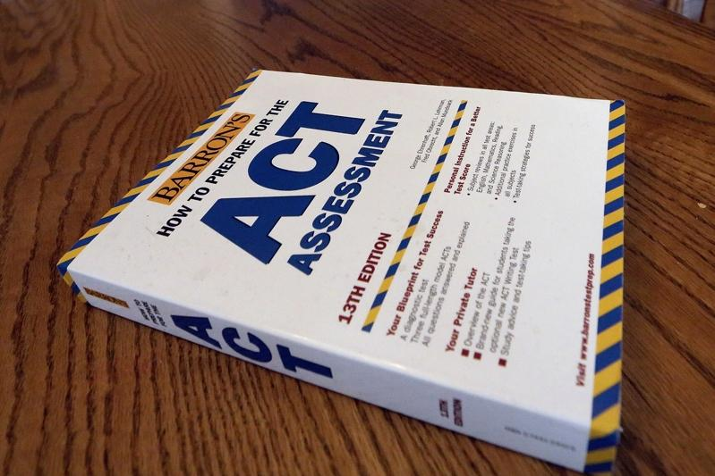
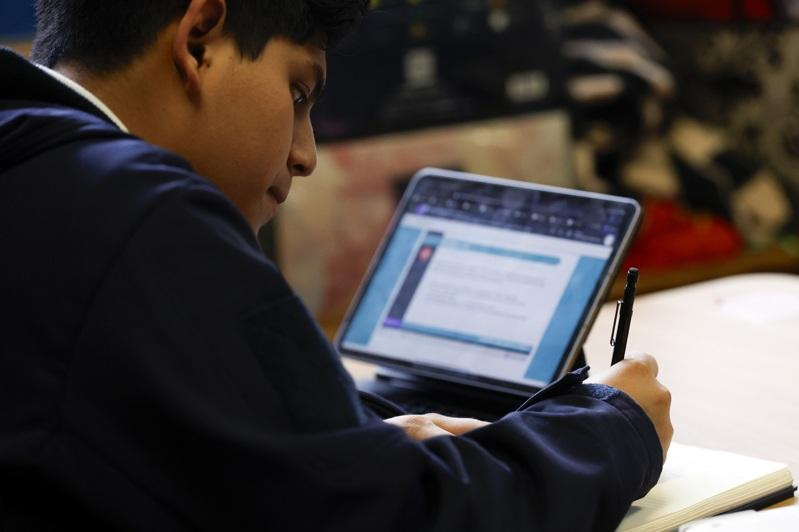

2024年大学录取非常具有戏剧性。
★首代贫困生 录取标准升
华人第一代贫困生的录取标准大幅提升。这是家长对前几年升学政策的一种因应。有些家长对家里收入和资产进行了调整，使得自己的年收入符合低收入标准，让现有的家庭财务申报符合贫困生要求。另外，一些家长即使有过大学教育背景，也选择不申报，让孩子可以用第一代大学生的身分申请大学。尤其很多新移民因为语言不通，教育背景没有被认可，从事的职业和原来的大学教育毫不相干。
当然这里最主要的因素是大学前几年对中产阶级学生的赶尽杀绝，迫使学生必须以第一代贫困生的身分才能有机会进入名校。这个类别学生的增多，水涨船高。整体而言，即使第一代贫穷生也需要有较扎实的比赛研究成绩，才能入名校的法眼，录取标准俨然上调了一个等级。
学术性向测验(Scholastic Aptitude Test, SAT)的评估效果回归，尽管大学继续声称放宽SAT成绩要求，但多数华人子弟都考了不错的SAT成绩。这种情况下，SAT成绩不够好或者因此而无法递交的人的确在录取上比较吃亏。这个现象在2023年录取就已经出现，而从2024届我观察到的案例，SAT比较弱的学生，即使是第一代贫困生在录取上也无法施展优势。
近来陆续有名校正式恢复「提交SAT」的申请要求，进一步确认了SAT在评估上不可取代的作用。目前推动SAT有两大因素，第一，研究显示SAT成绩和学生进入大学以后学习能力非常相关，低分的学生即使进入大学也难以生存。他们入学以后的成绩，是否能顺利完成学业，从申请时的SAT成绩就可以预估出来。大学没有理由放弃这个一个可靠的参数。
★名校重拾SAT 有利于甄别
第二，原来反对SAT的理由是该考试可能更偏向富裕家庭学生，而贫困生因为没有钱补习或考试表现不好。但这个理由目前被新的科学研究质疑，因为发现相对于大学参考的其他指针，例如课外活动，标准化考试对贫困生更友善。网络或慈善机构纷纷推出免费辅导，使得贫困生和富裕学生在SAT成绩上差距，反而没有其他因素，例如课外活动那么大。标准化考试更能帮助大学甄别有实力的贫困生，这一点是麻省理工学院(MIT)等名校重拾SAT的强劲理由。
成绩平均绩点（Grade Point Average, GPA）继续起到初步筛选的作用，因为大学继续收到创历史纪录的大量申请。GPA不过关的学生，其申请多数过不了第一关，从而没有机会被录取委员会讨论而直接放弃。这些学生或许有不错的标准化考试成绩，甚至课外活动也做得风生水起，但这些亮点都可能因为GPA不过关，而没有展示的机会。
有些学生和家长误以为出色的课外活动可以弥补GPA上的不足，这是对全面考察的误解。所谓全面考察是指光GPA还不够，课外活动也在考察范围内，但不是说GPA可以用其他因素来替补。
最高法院对于平权法案(Affirmative Action, AA)的否定，在提早申请一轮，并没有使得大学录取更多的华人学生。相反，这个法律裁决受到绝大部分大学的抵制。
在无法直接以肤色为理由录取学生的情况下，各大学都推出了各种所谓多元化的文书题目，邀请申请人分享他们生活文化背景和特殊的个人经验，以个人故事来判断申请人的身分，是否属于弱势。尤其在提早申请阶段，华人学生不但没有得到更多的名额，反而被名校单独挑出来，全面封杀。除了一群第一代贫困生有幸被录取以外，家庭背景较好的学生被录取的机会比往年还要少。
这个严峻的情况基本上拷贝了2021届早申的录取。当时正值疫情肆虐之时，加上「黑人的命也是命」(Black Lives Matter)运动的推波助澜，各大学都担心招不够弱势学生来满足他们多元化的指针。于是在早申期间疯抢第一代贫困生，并专门把名额用来招募他们往年没有留意的普通高中。
2024届的情况和当时有相似之处，只是2021届大学不确定疫情对招生的影响，而2024届大学则是不确定最高法院裁决对于招生多元化的影响。所以各大学在早申期间，都采取了保护性措施以确保他们的多元学生群体。这两届的早申录取可以说华人中产阶级学生，除非个别优秀到天花板级别的，基本上被无差别拒绝。
★名校挺巴学运 带来反思
不过就在这些优等生处于绝望的时候，在常规申请放榜季节，他们迎来了疫情以后第一个录取大丰收。
这个戏剧性的逆转，我个人认为和最高法院判决没有直接关系，而是源自于去年10月的以哈冲突。这事件导致了美国各名校的政治动荡，随着哈佛和宾州大学校长被国会质问，校长辞职，大学因为保护犹太学生不力而面临捐款大户的抵制，一股对美国高等教育的反思席卷全国。大学的目的到底是什么？大学生是用来被利用推动政治运动的，还是回归教育本身，做科研、培养人才？如果出于政治目的，大学尽可能招募各种背景的人，进行所谓多元化，而致学术水平于不顾。企图以一己之力扭转所谓社会分配不公，强行把所有人的终点线拉在一起，不管他们原来起点的明显差距。
在这个反思过程中，以犹太人主导的名校捐款大户，包括华尔街的用人大户，扮演主导角色。同时美国大学不得不和其他民众一起面对经济危机，政府削减教育预算，通货膨胀高涨，而来自中国的留学生不是面临财务问题就是面临理工科专业签证受限问题。他们留下的学费空白必须要本地中产阶级家庭来弥补。这时人畜无害、乖巧懂事的华人中产阶级孩子成了大学的心头好。
不过，今年非裔和西语裔的申请人依然在录取上获得照顾，我们听到的他们录取案例依然享有SAT超低分录取。所以最高法院的裁定，没有从根本上扭转种族在录取中的影响，具体各大学如何运行最高法院的判决，还需要打官司的组织进一步跟进。
当然这只是我个人的小范围的观察和分析，具体录取数字应该仰赖更大范围的统计说明。
★全额付学费 有录取优势
上述的因素究竟只是短期影响还是可能延续到以后长期的升学政策，我们还无法判断。只能看以后政治风气的走向。常常有家长问「我孩子这样的情况大概能去什么样的大学」，这个问题的前提假设是下一年录取的基本情况和以前一样；但像疫情、最高法院的裁决，以及以色列的局势都会对大学录取产生根本的影响。理论上说，没有人能够准确的预估这些非常规因素。
能够支付全额学费的学生，录取优势从2023届开始就表现出来，尤其在排名三、四十左右的大学。可能和国际生申请下降有关，大学更需要依赖国内学生的学费收入，目前高涨的通膨还有持续的经济衰退都是极大的助力。
同时，各大学也面临两大经济压力，第一，整个政治情势在迫使各大学招募更多低收入群体，因此需要提供大量的资助。第二，国际生的来源，因为中国经济衰退和中美关系的紧张直接导致理工科学生签证困难而受限。大学可能不得不因此而增加国内全自费学生的名额，来平衡财务支出。这些都进一步推高大学费用，从过去的六、七万元一年，逐渐提升到逼近10万元一年。
考虑到这个收费是家长税后缴纳的，对中产阶级家庭负担不是一般的重。近年来，一些中产阶级家长反映，如果接近每年近10万元的支出用于藤校级别的本科教育，那么家长还愿意勒紧裤腰带支持孩子，但这项投入如果是给排名三、四十开外的大学，家长会犹豫这些大学和本地公立大学之间的差距是否值得三倍的费用。
纽约州立大学一般费用在3万元一年，市立大学是7000元一年，和私立大学全学费差距非常大。所以在经济衰退中，如果孩子成绩不高不低的，家长愿意出全额学费可能在这一档大学录取会机会大一点。当然有关大学费用的预算最好全家达成共识，这样比较好以后有协商的原则。
★今年毕业生 如何应对
在这样的变化中，2025应届高中毕业生可以考虑的因应策略是：
1.和自己学校辅导员进行沟通，认真了解他们的专业观点，尤其在录取形势和选校方面遵循他们的建议。如果老师认为某些大学孩子不太可能进，真的需要慎重考虑，可以放在常规申请中，而不是提早决定(Early Decision, ED )，否则等于浪费一个ED的机会。当然辅导员不是算命先生，也未必能拿得准今年录取变化，但他们会协助你制定一个相对完善的申请名单，以应对各种可能性。
2.调整自己的期望值。华人孩子都是很有抱负的，无论学生还有家长都对将来进入的大学有自己的想法和预期。但这里不得不提醒大家面对现实，政治风气和大学招生政策的改变不是我们能够左右的，我们能做到的就是尽量在现有条件下争取到最好的录取结果。高中常用的申请大学Naviance系统里的GPA和SAT数据都是往年累积下来的，不只是反映去年的情况，在大家使用该系统锁定自己的选校的时候，请给自己留一点空间。
孩子需要学习如何根据变化的情况进行自我调整。每年学生中有一些就是在ED结果出来以后，看到形势非常不好，在ED2选校时及时进行调整，结果不错；但另外一些孩子抱着常春藤学校的念想不放，坚持不ED2，常规申请的竞争白热化，最后结果更不理想。
3.充分使用ED和ED2的申请机会。除非个别的学生拥有挑战大藤级别学校的实力，他们可以轻松碾压同届绝大部分学生，选择有限制的提早申请(Restrictive Early Action, REA)大藤，然后常规申请时放开申请。如果整个申请工作到位的话，最后即使进不了大藤，也应该有相当的机会进入一所不错的大学。
但其他大部分孩子需要充分使用ED和ED2，因为这是最容易进入理想大学的途径，绝大多数情况常规申请录取不会超过ED或ED2。ED和ED2进不了的大学，常规申请时更不可能。尤其目前大学如此重视报到率，提早行动(Early Action, EA)和常规申请中录取的可能性大大降低。
根据统计数据，目前ED录取率是常规申请录取率的二到八倍。所以大家应该把宝押在哪里，结果是显而易见的。
非常可惜的是前几届能够充分使用ED和ED2的华人孩子非常少，现在许多大学把远超过一半的录取名额放在ED、ED2中。如果你错过了这一大半，硬是要在常规申请时，跟无数申请人拚剩下这一小半名额，结果会非常惨。如果2025届的学生想要有更好的入学结果，通过ED、ED2申请合理的目标大学是关键。
上面是指一般的情况，但如果有突发事件，可能会出现常规申请录取普遍比早申好的情况。比如2024届和2020届，因为突发的疫情有许多人无法按照原计划升学，空出比较多的位置给在等候名单的申请人转正。

4.新版SAT考试推出以后，普遍反应是比旧版更难，平均分数更低。鉴于标准化考试成绩的回归，我们必须重视这些考试。
这里强烈建议2025届学生，如果还没有理想的标准化考试成绩，可以考虑参加美国大学入学测验(American College Testing, ACT)。坊间谣传ACT不如SAT有含金量的说法，纯粹是无稽之谈。大学认可ACT考试，相较于新版SAT，ACT依然是纸本考试，网络上有大量复习数据可以参考练习，考出理想成绩的几率大得多。

在时间紧迫的情况下，2025届学生不宜在标准化考试上恋战，愈接近申请截止日期，学生会思想压力愈大，反而影响考试的表现。